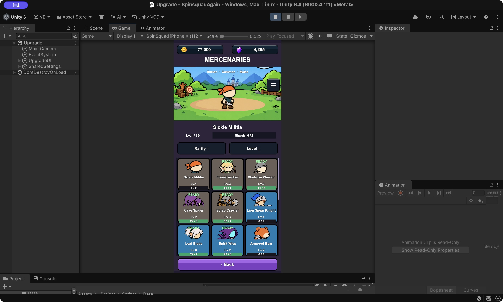
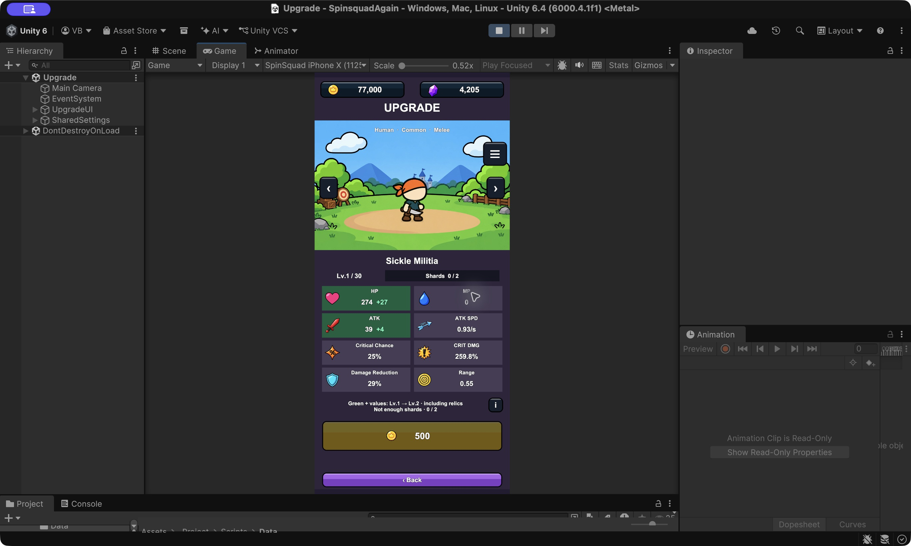
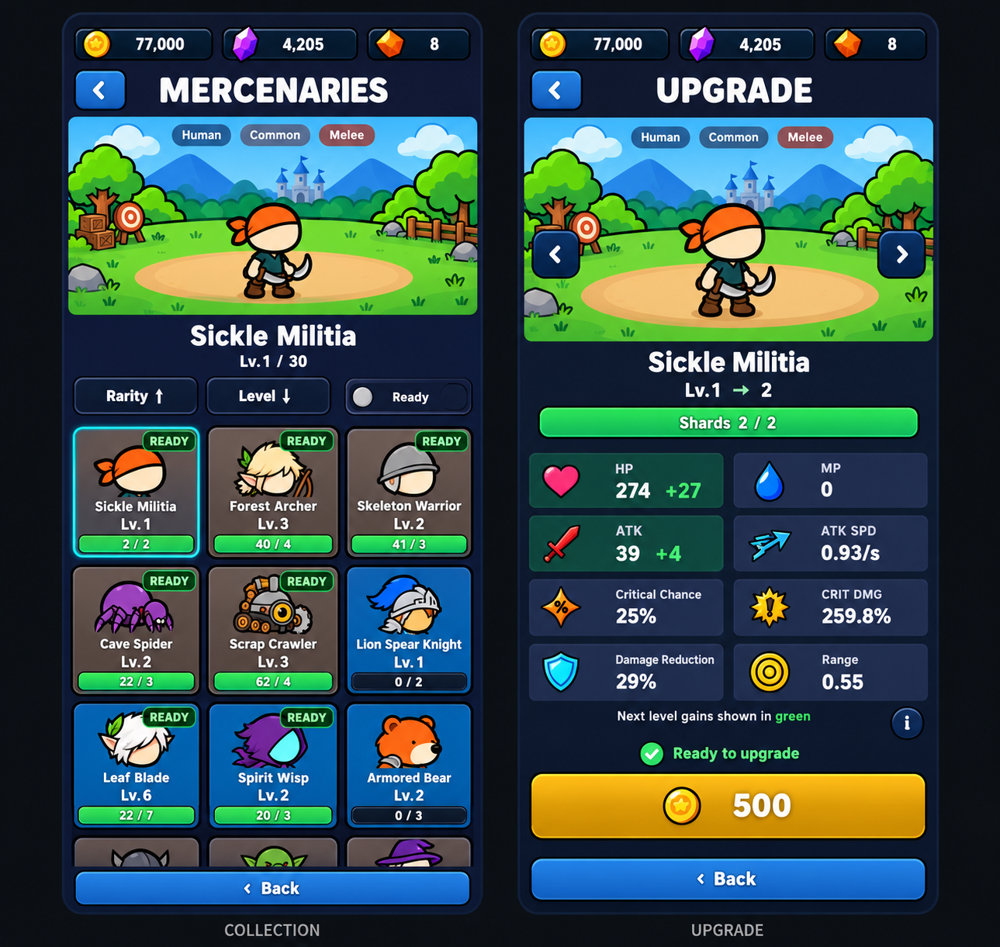

Bản demo để duyệt, chưa sửa runtime. Ảnh hiện tại là ảnh chụp từ game đã lưu; code mới nhất đã thêm ví Mythic Stone. Giá và chỉ số trong bản đề xuất dùng để minh họa bố cục, không thay cân bằng game.



Collection: chân dung đầu, số mảnh lớn, trạng thái đủ nâng dễ nhận diện. Upgrade: giữ đủ 8 stat, + chỉ số level sau, shard bar đầy, nút nâng chỉ hiện gold. Hai màn tách biệt, nền và Back navy.
Ảnh Mercenaries gốc · Ảnh Upgrade gốc · Mở đề xuất kích thước đầy đủ